ДКС-АТ1121.
Инструкция по настройке
1. Наклеить на прибор наклейку с номером. В базу настройки АТ1121 записать дату настройки, серийный номер и ФИО регулировщика.
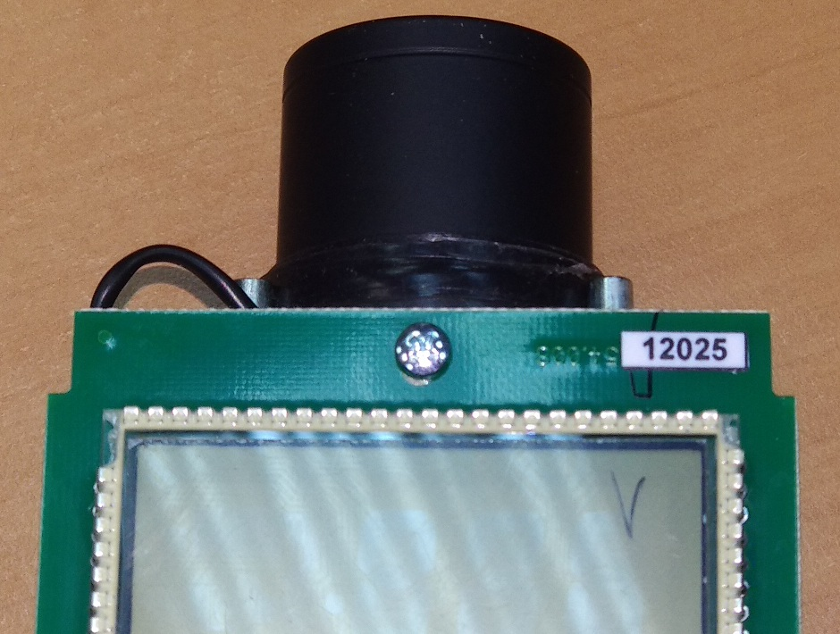 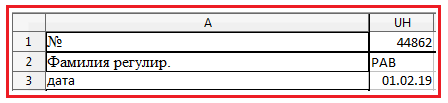2. В полученные со сборки приборы вставить аккумуляторы, включить, подсоединить питание и поставить на приработку на 24 часа. Приработку производить в 3 диапазоне

3. Проверить ток потребления: для этого замерить напряжение на R26 (мВ) и вписать значение в базу настроек, база сама высчитает ток:
 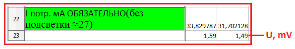
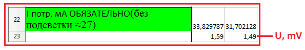
4. Записать номер и дату изготовления в память прибора.
- Подключить дозиметр к адаптеру USB
- Запустить программу BackgroundCalibration. Дозиметр подключится автоматически
- Нажать "Запись идентификационных данных"
- Записать серийный номер, месяц и год производства


Если перед тем, как нажать "Запись..." НЕ выделять строку с прибором,
Background сам подставит сегодняшнюю дату
5. Перепроверить установленные коэффициенты:
- При включении нажать и удерживать кнопку
- Нажать три раза , на экране появится "---":
- Два раза нажать кнопку
- Набрать "718", для этого с помощью клавиш и выбирается цифра, а с помощью выбирается следующая позиция
- После ввода последней цифры, нажать
- Нажать и удерживать кнопку , появится ".1."
- Нажимая кнопку , выбрать пятый режим
- Переключение коэффициента осуществляется кнопкой , значение коэффициента изменяется кнопками и

Должны стоять такие коэффициенты:
| 1U | 1.0 |
| 2U | 1.0 |
| 3U | 1.0 |
| 4U | 0 |
| 5U | 0 |
6. Подстроечным резистором установить фоновые показания прибора. Для этого подстроечным резистором на плате преобразователя импульсов выставить 17-18 Ом.
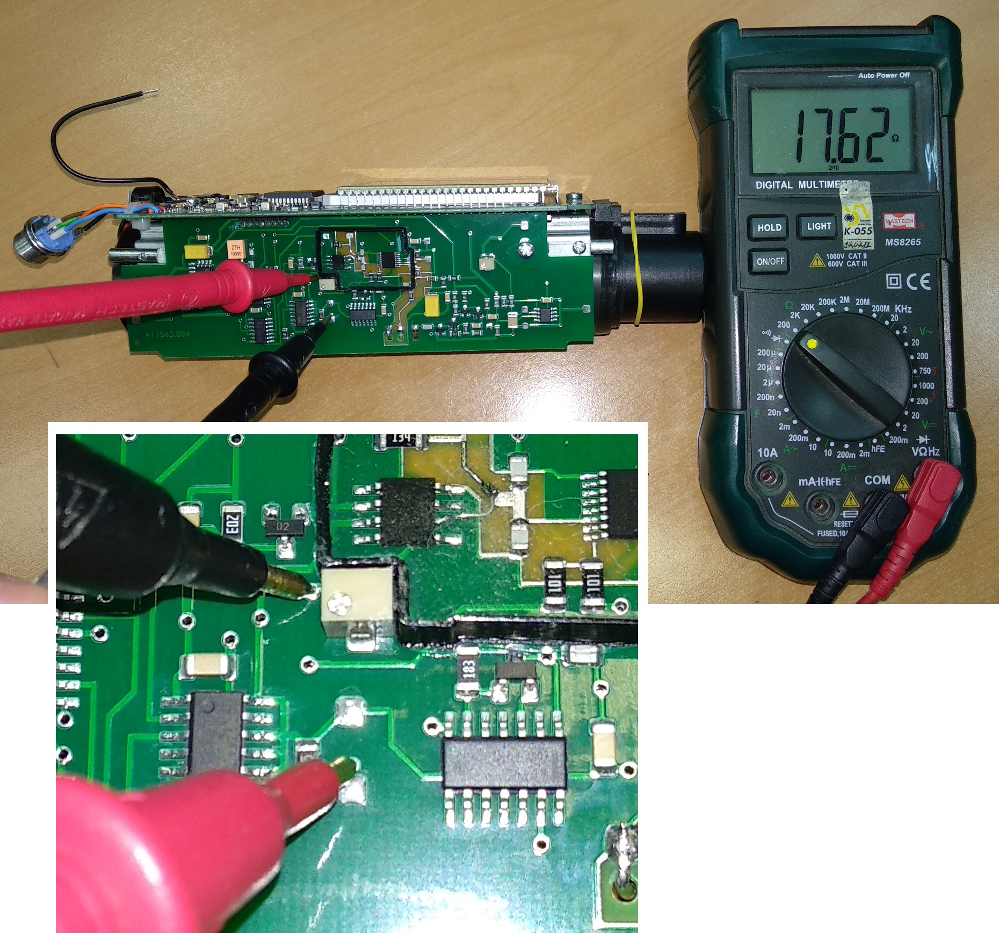7. Установить Uвыс резисторами R14, R15 на плате преобразователя напряжения по показаниям от ОСГИ 137Cs:
- Закрепить источник ОБЯЗАТЕЛЬНО латунной пластинкой к прибору

- Включить дозиметр
- С помощью подбора номинала резистора R14 (грубо) и регулировкой подстроечного резистора
R15 (точно)добиться показаний от источника 137Cs:
Ошибка загрузкиЧтобы не подбирать номинал резистора наугад, можно воспользоваться такой формой (пока считает не точно, мало статистики): 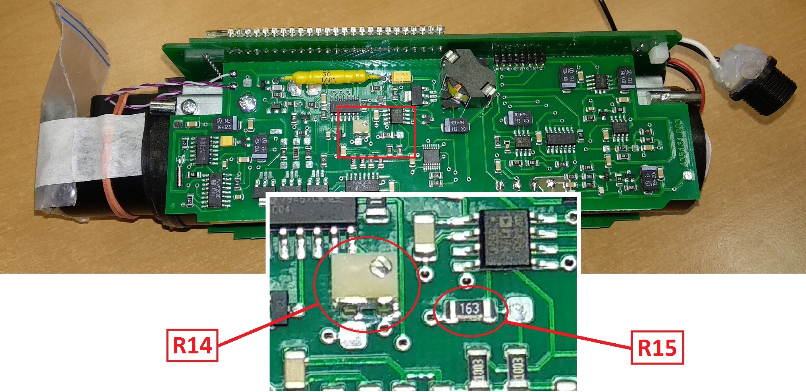 Показания снимать прямо с экрана прибора (можно и с ПК через BackgroundCalibration, но смысл?).
- Проверить показания во втором диапазоне.
Записать в базу настройки показания дозиметра в 1-м и 2-м диапазоне, сопротивление R14 и R15
Как переключаться во второй диапазон?
- Одновременно нажать и
- На экране отобразится номер диапазона 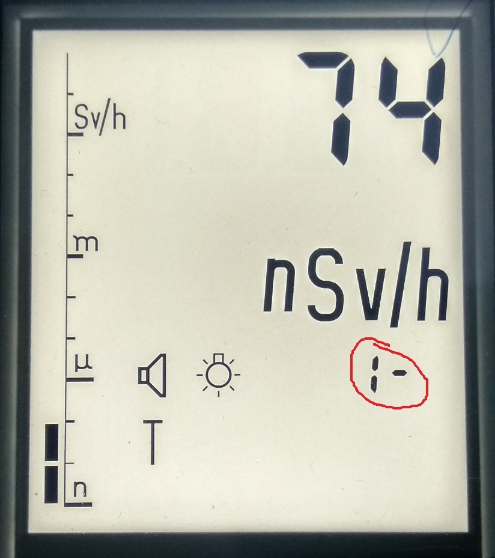
- Кнопками и выбрать необходимый диапазон (1, 2, 3)
- После окончания измерений переключиться обратно в первый диапазон
- Для выхода в нормальный режим одновременно нажать и

8. Проконтролировать напряжение и форму пробоя светодиода в 1 и 3 диапазоне.
-
Для этого:
- Включить прибор, перейти в 3-ий диапазон
- Одновременно нажать и
- На экране отобразится номер диапазона
- Кнопками и выбрать необходимый диапазон (1, 2, 3)
- После окончания измерений переключиться обратно в первый диапазон
- Для выхода в нормальный режим одновременно нажать и
- С помощью осциллографа проверить сигнал светодиода. Максимум не должен превышать 100В:
- То же сделать для 1-го диапазона
- Значение напряжения диода для 3-го и 1-го диапазона записать в базу настройки 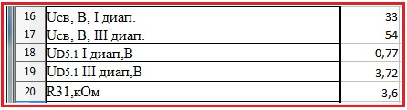
- С помощью мультиметра проверить напряжение на 1-ом выводе микросхемы D5. Напряжение не
должно
превышать 4.9В.

- То же сделать для 1-го диапазона.
Если напряжение на 1-м выводе превышает 4.9В, следует заменить резистор R31 на
больший
номинал

- Напряжение на микросхеме для 3-го и 1-го диапазона, номинал резистора R31 записать в базу настройки
Как переключаться в третий диапазон?


9. Проверить отсутствие показаний прибора во 2 и 3 диапазоне.
10. Проверить высокое
- Осциллографом замерить напряжение на высоком (в 1-м диапазоне): 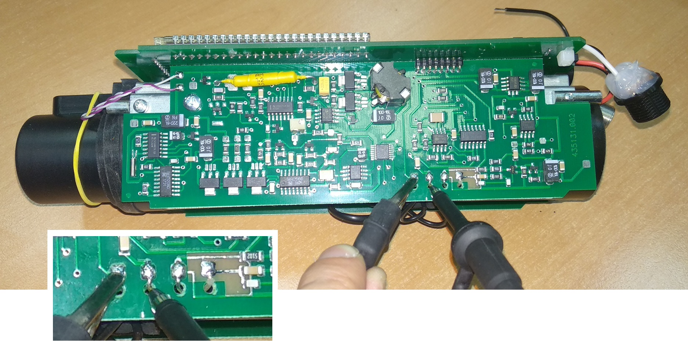 Смотреть значение "Размах": 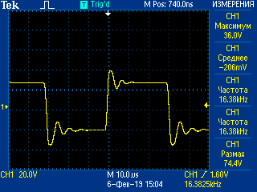
- Высокое будет "прыгать", поэтому удобнее на осциллографе установить режим "Усреднения"
Что ещё за усреднение?
Для этого на осциллографе нажать "Сбор данных" [A], выбрать "Среднее" [B], выставить "Усреднение" равным 128, нажать "Измерения" [C]
- Записать в базу настройки напряжение высокого 1-ом диапазоне 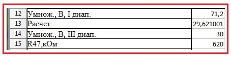
- В ячейке "Расчет" отобразится значение напряжения на высоком в 3-м диапазоне
- Переключится в 3-й диапазон и сравнить напряжение на высоком с расчетным
- Если напряжение примерно совпало, идём дальше, если нет — корректируем. Для этого необходимо подобрать резистор R47. Отклонение от расчетного значения не должно превышать 0,6-0,8 В
- Чтобы увеличить, надо уменьшить и наоборот 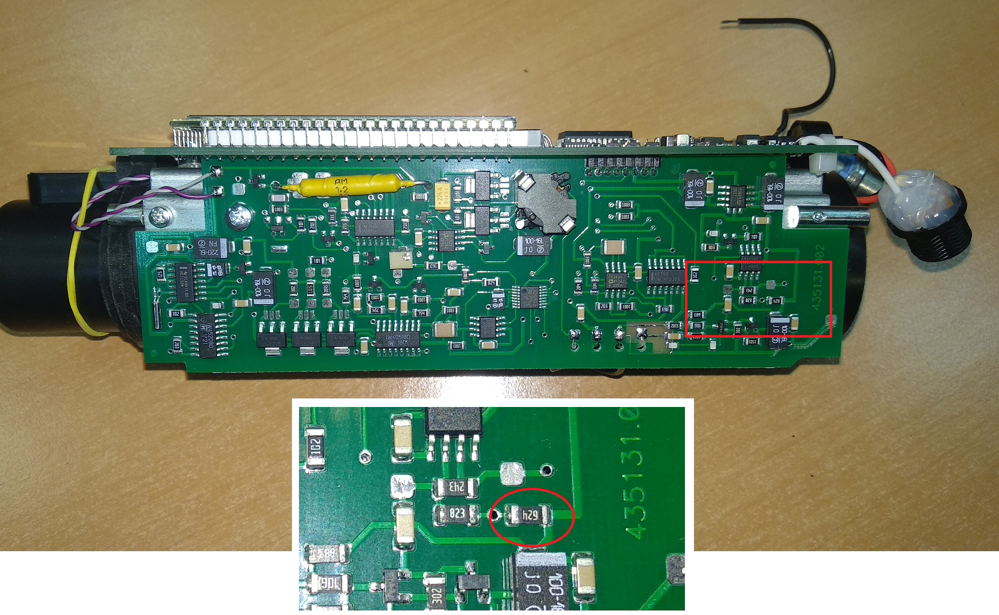
- Записать в базу настройки напряжение высокого 3-ем диапазоне
- Записать в базу настройки номинал резистора R47
11. Установить показания прибора от ОСГИ 109Сd 1079:

- Закрепить источник ОСГИ 109Сd 1079 на колпачок
- С помощью резистор R14 (грубо) и подстроечного R15 добиться такого значения мощности дозы:
- Сопротивление R14 не должно превышать 75кОм!
- Сопротивление R15 измеряется при выключенном приборе
- Сопротивление R15 не должно превышать 9кОм!
- Чтобы увеличить значение мощности дозы, сопротивление резистора нужно увеличить, и наоборот
- Записать в базу настройки номиналы R14 и R15, значение м.д. от 109Cd
Ошибка загрузки
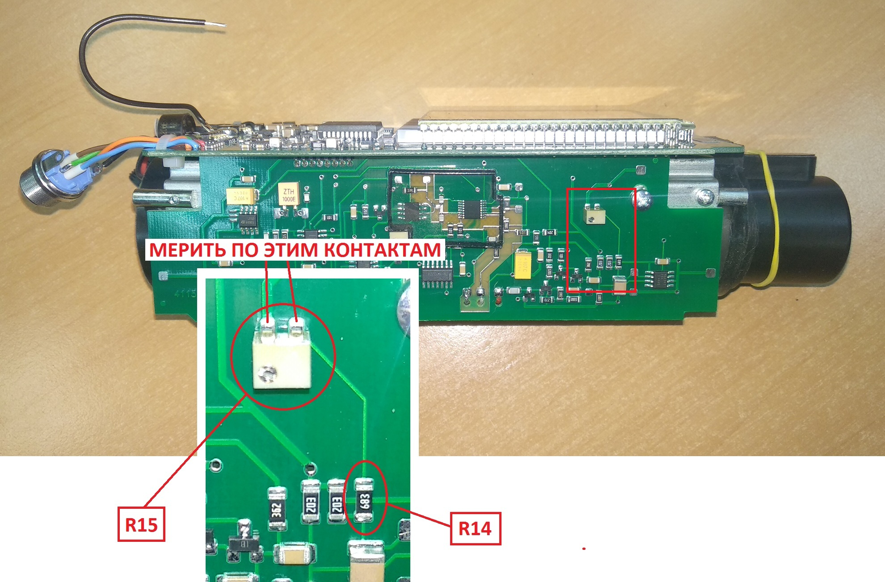
Если уже запаян резистор на максимум (75кОм) и подстроечный выкручен до предела,
можно попробовать перепаять вот этот резистор на 620 ом:
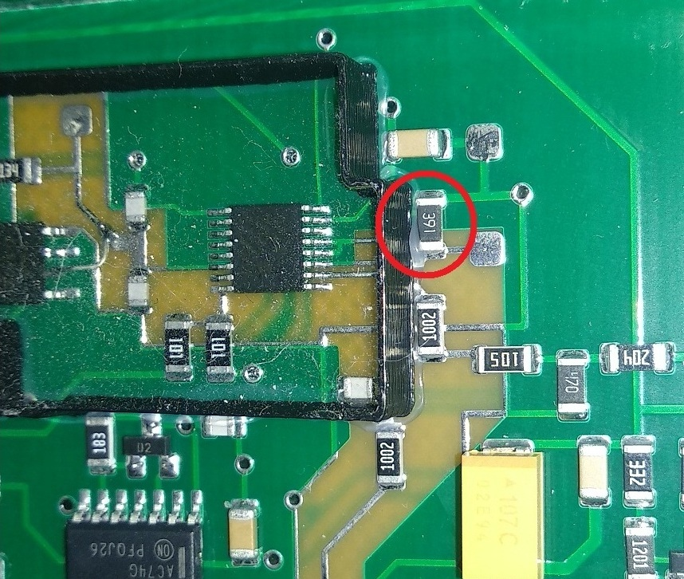
12. Осциллографом проконтролировать число импульсов сигнала «МВ» на фоне ≈10-15 имп.


13. Перепроверить показания по 137Cs и напряжение на D5.1 в 3 диапазоне на
плате преобразователя
напряжения (см. пункт 7 и 8).
14. Проверить время наработки — должно быть НЕ МЕНЕЕ 100 ЧАСОВ. Если меньше, включить в 3-й диапазон и поставить на стеллаж прирабатываться до 100 часов
Чтобы проверить часы наработки:
- Включить прибор, при включении зажать
- На экране появится:
- нажать , на экране появятся часы наработки.
- Часов наработки должно быть НЕ МЕНЕЕ 100
- Если меньше, включить в 3-й диапазон и поставить на стеллаж прирабатываться до 100 часов


15. Зарядить и отдать на УДГ.
16. После того, как вернулись с линейки, проверить данные. Если всё в порядке, отдать Наташе. Настройка закончена.
- если есть колебания показаний в точке 700 мЗв в 3-м диапазоне (плавают от 680 до 820 мЗв), то на плате преобразователя напряжения заменить конденсатор С35 с 0.47мкф на 10 мкф. Это уменьшит колебания высокого напряжения, "успокоит" прибор. 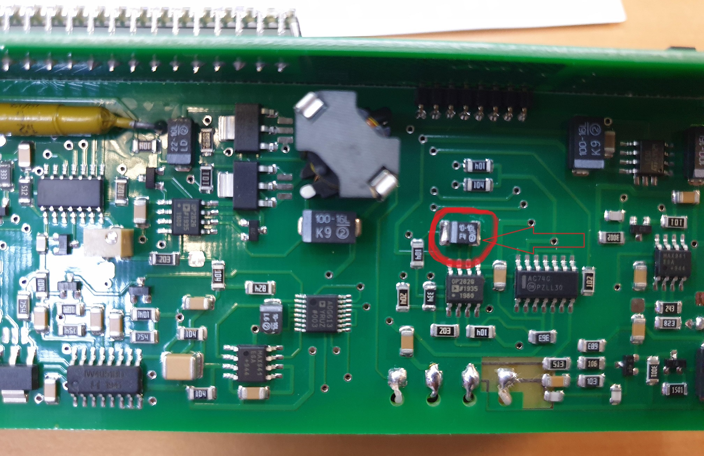
- Показания по 109Ca [B] должны (примерно) совпасть с эталонным значением [A]
- Показания по 241Am [D] должны (примерно) совпасть с эталонным значением [C]
- 60Co [E] должен показать 10
- Точки 7[F] и 10[G] примерно должны совпасть